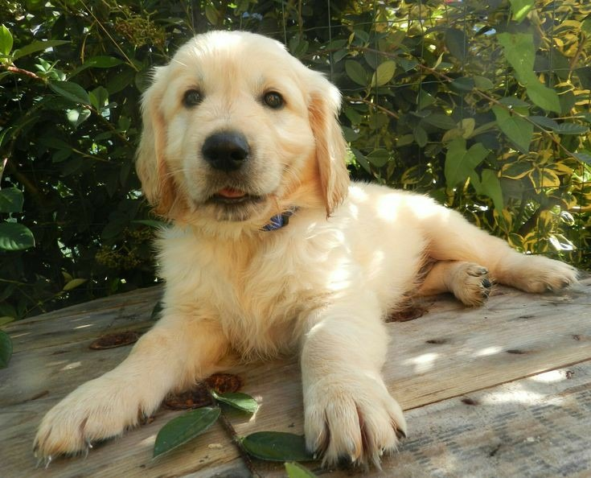

Голди, как часто называют этих собак за их исключительный темперамент, хотя изначально и были выведены как рабочие собаки, легко стали домашними компаньонами. Золотистых ретриверов продолжают ценить как подружейных собак, но используют и в других качествах, в том числе как поисковых собак и собак-спасателей, для обнаружения наркотиков и бомб и как собак-помощников, работающих со слепыми и глухими людьми. Золотистых ретриверов обычно легко дрессировать. Эти собаки послушны и сообразительны, что в сочетании с их добрым нравом привело к огромной популярности породы.
Эта порода была выведена в Шотландии в XIX в. сэром Дадли Коуттсом Марджорибэнксом. Одной из собак, которые помогли выведению породы, был Нус, от которого твид-спаниель Белль принесла четырёх щенков жёлтого окраса. Этих собак скрестили с красными сеттерами,курчавошерстными ретриверами, английскими бладхаундами и водяными твид-спаниелями. В результате этих скрещиваний наконец появился особый тип собак. Первый золотистый ретривер был представлен на выставке Crufts в 1908 г., а в 1913-м Британский клуб собаководства признал породу. В 30-х гг. собак этой породы завёз в США полковник С. Магоффин, который создал псарни Гилнокки в штате Колорадо, откуда и ведут своё происхождение многие современные золотистые ретриверы.

Песики этой породы как открытая книга, и в то же время они неустанно удивляют и радуют своих хозяев. Желтые лучики счастья готовы одаривать теплом круглые сутки, семь дней в неделю(:


Особенности | |
| Размер: | Среднекрупный |
| Потребность в нагрузках: | Средняя |
| Уход за шерстью: | Тщательный |
| Высота в холке: | 53-61 см |
| Вес: | 25-34 кг |
| Средняя продолжительность жизни: | 10-14 лет |
| АКС: | Группа спортивных собак |